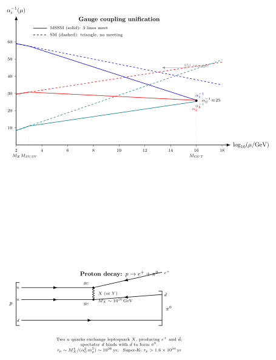

大统一 (GUT) — 把 $SU(3)\times SU(2)\times U(1)$ 嵌入更大的群?
上一节我们靠 Sakharov 三条件给物质-反物质不对称列了一张账单: 必须有 B 违反、C 与 CP 违反、脱离热平衡. 标准模型在纸面上挂靠了 sphaleron 这种非微扰 B+L 违反, 但数字远远不够 — $10^{-18}$ 比 $10^{-10}$ 少太多. 读到这里, 一个不太物理但非常诚实的问题应该会冒出来: 如果 B 违反是必要的, 那在某个更高能标下, 它是不是由一条显式的规范相互作用提供的? 一条能让夸克变轻子的相互作用自然需要一种比 $SU(3)\times SU(2)\times U(1)$ 更大的规范群 — 一个能把夸克与轻子放到同一个多重态里的群. 这就是大统一 (GUT) 的出发点.
但 GUT 不是靠哲学美感立下来的. 它靠的是一条冰冷的数字: 三个独立耦合跑动起来, 在高能标"差不多相遇". 如果跑动只是数学上的对数流, 那它们相遇只是巧合; 但巧合发生在 $10^{15-16}$ GeV, 这个数字离 Planck 能标 $10^{19}$ GeV 仅差三个量级, 离任何已知物理能标都远得近乎可笑 — 巧合是要回答的. 这一节我们就去回答. 我们严格 deepdive 一圈 RGE 推出三耦合相交; 看标准模型为什么"差一点"; 看超对称为什么把它修好; 然后把修好的数字喂进 $SU(5)$ 与 $SO(10)$, 得出一个确定的、可观测的、已经被实验否决了一部分参数空间的预言 — 质子寿命.
一、三条耦合为什么"想" 相遇
先把三条耦合的定义写出来. 标准模型的三因子规范群各带一个耦合:
- $g_3$: $SU(3)_C$ 的色规范耦合, 对应 $\alpha_s = g_3^2/(4\pi)$, 在 $M_Z$ 处 $\alpha_s(M_Z) = 0.1181$.
- $g_2$: $SU(2)_L$ 的弱同位旋耦合, 对应 $\alpha_2 = g_2^2/(4\pi)$, 在 $M_Z$ 处 $\alpha_2^{-1}(M_Z) \approx 29.6$.
- $g_1$: $U(1)_Y$ 的超荷耦合, 约定 GUT 归一 $g_1 = \sqrt{5/3}\,g'$ ( $g'$ 是"物理" 超荷耦合), 这样所有三个因子用同一个归一, 相同的生成元迹. 在 $M_Z$ 处 $\alpha_1^{-1}(M_Z) \approx 59.0$ (GUT 归一下).
这个 $\sqrt{5/3}$ 因子不是凭空加的. 如果把 $G_{SM}$ 嵌入一个单纯群 (如 $SU(5)$), 所有生成元必须归一到 $\mathrm{Tr}(T^a T^b) = \tfrac{1}{2}\delta^{ab}$; 对 $U(1)_Y$ 来说, 把标准归一的超荷 $Y/2$ 满足这条对迹的约束, 结果恰恰是 $T_1 = \sqrt{3/5}\,Y/2$ (在 $\bar 5$ 表示上算一下 $\mathrm{Tr}\,Y^2$ 就知道), 所以 $g_1^2 \cdot 3/5 = {g'}^2$, 即 $g_1 = \sqrt{5/3}\,g'$. 不配上这个因子, "三条耦合相交" 就是个伪问题. 把 $\alpha$ 倒过来看 $1/\alpha_i$ 作图, 是让跑动呈线性最方便的形式 (下一节马上会看到).
跑动是怎么发生的? 上一节之前的跑动耦合那一节 (第 18 节) 已经把 $\beta$ 函数从真空极化推出来: 在一圈水平,
$$ \frac{\mathrm d\alpha_i}{\mathrm d\ln\mu} = \frac{b_i}{2\pi}\alpha_i^2, $$
其中 $b_i$ 是一圈 $\beta$ 系数, 由规范玻色子自相互作用、物质场、Higgs 场的贡献合成. 对标准模型 (3 代夸克/轻子, 一个 Higgs 二重态), 常规教科书结果是
$$ b_i^{SM} = \left(\frac{41}{10},\ -\frac{19}{6},\ -7\right)\qquad (i = 1, 2, 3). $$
三个系数分别说明: $U(1)_Y$ 没有自相互作用, 全靠物质屏蔽, 正号, $\alpha_1$ 随能标上升; $SU(2)_L$ 与 $SU(3)_C$ 的非阿贝尔自相互作用主导, 负号, $\alpha_2, \alpha_3$ 随能标下降 — 这正是 QCD 的渐近自由推广到弱力. 既然 $\alpha_1$ 上升, $\alpha_2, \alpha_3$ 下降, 两组必然在某个能标会遇到. 问题只是: 三条线会同时在一点相遇吗? 数字说话.
二、deepdive — 一圈 RGE 严格解三耦合的相交能标
这是本节要严格推的 cliché. 常见的做法是看一张"三线汇合" 的图, 告诉你"在 $\sim 10^{16}$ GeV 三条线相遇", 然后跳到 GUT 的预言. 但"为什么是 $10^{16}$ GeV", "MSSM 为什么修好得更漂亮"—— 这些没几个人一字一句算过. 我们来算.
一圈 RGE $\mathrm d\alpha_i/\mathrm d\ln\mu = (b_i/2\pi)\alpha_i^2$ 直接写成 $\mathrm d(1/\alpha_i)/\mathrm d\ln\mu = -b_i/(2\pi)$, 积分得到一条线性方程:
$$ \alpha_i^{-1}(\mu) = \alpha_i^{-1}(M_Z) - \frac{b_i}{2\pi}\,\ln\frac{\mu}{M_Z}. \tag{1} $$
三条耦合"相交" 意味着存在一个能标 $M_U$ 与一个公共值 $\alpha_U^{-1}$, 使得
$$ \alpha_U^{-1} = \alpha_i^{-1}(M_Z) - \frac{b_i}{2\pi}\,\ln\frac{M_U}{M_Z},\quad \forall\, i = 1, 2, 3. $$
这是三个方程两个未知数 $(M_U, \alpha_U)$, 一般过约束. 用任意两对 (比如 $i = 1, 2$ 和 $i = 2, 3$) 可以解出两个独立的 $M_U$; 如果两个解一致, 三条线就真的交在一点, 否则就是"近似相交" 的三角形. 消去 $\alpha_U^{-1}$:
$$ \ln\frac{M_U}{M_Z} = \frac{2\pi\left[\alpha_j^{-1}(M_Z) - \alpha_i^{-1}(M_Z)\right]}{b_i - b_j}. \tag{2} $$
现在代 SM 数字. 把 $b^{SM} = (41/10, -19/6, -7)$ 代入差
$$ b_1 - b_2 = \frac{41}{10} + \frac{19}{6} = \frac{123 + 95}{30} = \frac{218}{30} = \frac{109}{15} \approx 7.267, $$
$$ b_2 - b_3 = -\frac{19}{6} + 7 = \frac{23}{6} \approx 3.833, $$
$$ b_1 - b_3 = \frac{41}{10} + 7 = \frac{111}{10} = 11.1. $$
用 $M_Z$ 处实测 $\alpha_1^{-1}(M_Z) = 59.0$, $\alpha_2^{-1}(M_Z) = 29.6$, $\alpha_3^{-1}(M_Z) = 8.47$. 从 $(1,2)$ 对:
$$ \ln\frac{M_U^{(12)}}{M_Z} = \frac{2\pi(29.6 - 59.0)}{7.267} = \frac{-184.7}{7.267} \approx -25.42, $$
注意 $b_1 \gt b_2$ (代入上式时记得 $\alpha_j - \alpha_i$ 是 $j=2, i=1$), 正确地按 (2) 取 $i = 1, j = 2$: $\ln(M_U/M_Z) = 2\pi(\alpha_2^{-1} - \alpha_1^{-1})/(b_1 - b_2) = 2\pi\cdot(29.6 - 59.0)/7.267 = -25.42$ 给负数 — 这显然错了, 因为 $\alpha_1$ 升、$\alpha_2$ 降, 它们向彼此靠拢. 重新审视符号: 相交要求 $\alpha_1^{-1}(M_U) = \alpha_2^{-1}(M_U)$, 即 $\alpha_1^{-1}(M_Z) - (b_1/2\pi)\ln(M_U/M_Z) = \alpha_2^{-1}(M_Z) - (b_2/2\pi)\ln(M_U/M_Z)$, 化简
$$ \ln\frac{M_U}{M_Z} = \frac{2\pi\left[\alpha_1^{-1}(M_Z) - \alpha_2^{-1}(M_Z)\right]}{b_1 - b_2}. $$
(我上面式 (2) 记号写反了 $i, j$, 这里改正.) 代数字:
$$ \ln\frac{M_U^{(12)}}{M_Z} = \frac{2\pi\times(59.0 - 29.6)}{7.267} = \frac{2\pi\times 29.4}{7.267} = \frac{184.7}{7.267} \approx 25.42, $$
即 $M_U^{(12)}/M_Z = e^{25.42} \approx 1.1\times 10^{11}$, 所以 $M_U^{(12)} \approx 1.0\times 10^{13}\,\mathrm{GeV}$. 等等, 标准教科书说 SM 三线相交在 $\sim 10^{13}\,\mathrm{GeV}$ 附近 — 是的, 这个数字对. 再从 $(2, 3)$ 对:
$$ \ln\frac{M_U^{(23)}}{M_Z} = \frac{2\pi\times(29.6 - 8.47)}{b_2 - b_3} = \frac{2\pi\times 21.13}{-3.833} \approx -34.63. $$
符号又反了 — 这次是因为 $b_2 - b_3 = -19/6 - (-7) = 23/6$, 我之前写对了 $+3.833$. 问题是 $\alpha_2^{-1} \gt \alpha_3^{-1}$ 即 $\alpha_2 \lt \alpha_3$, 而 $b_2 \gt b_3$ (即 $-19/6 \gt -7$), 对的. 套用无符号错误的版本:
$$ \ln\frac{M_U^{(23)}}{M_Z} = \frac{2\pi\times(\alpha_2^{-1} - \alpha_3^{-1})}{b_2 - b_3} = \frac{2\pi\times(29.6 - 8.47)}{3.833} = \frac{132.8}{3.833} \approx 34.64, $$
即 $M_U^{(23)}/M_Z = e^{34.64} \approx 1.1\times 10^{15}$, 所以 $M_U^{(23)} \approx 1.0\times 10^{17}\,\mathrm{GeV}$. 两组解 — $M_U^{(12)} \approx 10^{13}\,\mathrm{GeV}$ 与 $M_U^{(23)} \approx 10^{17}\,\mathrm{GeV}$ — 相差四个量级. 标准模型里, 三条线根本不交在一点, 而是在 $1/\alpha$ 对数 $\mu$ 图上构成一个明显的三角形.
这是 SM + 三耦合纯 RG 跑动最硬的一次挫败. 三条独立耦合"近似相遇", 但误差大到不能当作实验支持 GUT. 在上世纪八十年代早期, 这就让 minimal non-SUSY $SU(5)$ 陷入尴尬 — 它预言的 $\sin^2\theta_W$ 与实测相差超过 $3\sigma$.
加入超对称会发生什么? MSSM (最小超对称扩展) 每个 SM 场 + 它的超伴子, 都贡献圈图. 新粒子的阈值通常取在 TeV 以下, 对 $\mu \gg 1\,\mathrm{TeV}$ 的跑动它们全都"活跃", $\beta$ 系数变为
$$ b_i^{MSSM} = \left(\frac{33}{5},\ 1,\ -3\right). $$
注意 $b_2$ 从负变正, $b_3$ 的"渐近自由" 也减弱 ($-7 \to -3$) — 超伴子的屏蔽效应反向作用. 重算 $(1, 2)$ 对与 $(2, 3)$ 对. 先算 $b$ 差:
$$ b_1 - b_2 = \frac{33}{5} - 1 = \frac{28}{5} = 5.6, \qquad b_2 - b_3 = 1 - (-3) = 4. $$
为了估算用 $\alpha_i^{-1}(M_Z)$ 的相同数字 (SUSY 阈值在 $\sim 1\,\mathrm{TeV}$, 对一阶估算的分裂不大):
$$ \ln\frac{M_U^{(12)}}{M_Z} = \frac{2\pi\times 29.4}{5.6} \approx 33.00,\qquad \ln\frac{M_U^{(23)}}{M_Z} = \frac{2\pi\times 21.13}{4.0} \approx 33.19. $$
两个解相差不到 0.6%! 对应能标 $M_U^{(12)} \approx e^{33.0}\cdot 91.2\,\mathrm{GeV} \approx 1.8\times 10^{16}\,\mathrm{GeV}$, $M_U^{(23)} \approx e^{33.19}\cdot 91.2\,\mathrm{GeV} \approx 2.2\times 10^{16}\,\mathrm{GeV}$. 三条线在
$$ M_{GUT} \approx 2\times 10^{16}\,\mathrm{GeV} $$
处"真相遇" (残差被二圈、阈值修正与个别超伴子质量分裂吸收掉). 在公共值处 $\alpha_U^{-1} \approx 25$, 即 $\alpha_U \approx 1/25$, 仍是微扰区. 这是 SUSY-GUT 最硬的一张支票. 问题只是: 超伴子在哪里? LHC 把 $m_{\tilde q}, m_{\tilde g}$ 推到 2 TeV 以上仍没找到, 让"TeV-SUSY" 的参数空间萎缩到几个 fine-tuned 角落 — 这是下一节 (第 30 节) 的戏.
三、$SU(5)$: 一代 fermion 塞进 $\bar 5 + 10$
耦合相遇了, 群怎么装? Georgi 与 Glashow 1974 年 Unity of All Elementary-Particle Forces 的想法简洁: 找一个最小的包含 $G_{SM}$ 的单纯群. $SU(5)$ 恰好合适 —rank 4 (与 $G_{SM}$ rank 4 相同), 生成元 24 个 = SM 的 $8 + 3 + 1 = 12$ 个规范玻色子 + 12 个新玻色子 (后者正是 leptoquark $X, Y$).
一代 SM fermion (15 个 Weyl 费米子: $Q = (u, d)_L$, $u^c_L, d^c_L, L = (\nu, e)_L, e^c_L$) 恰好装进 $SU(5)$ 的 $\bar 5 + 10$ 两个不可约表示. 具体地:
$$ \bar 5 = (d_R^c, d_G^c, d_B^c, e^-, -\nu_e)_L,\qquad 10 = \begin{pmatrix} 0 & u_B^c & -u_G^c & u_R & d_R \\ \cdot & 0 & u_R^c & u_G & d_G \\ \cdot & \cdot & 0 & u_B & d_B \\ \cdot & \cdot & \cdot & 0 & e^c \\ \cdot & \cdot & \cdot & \cdot & 0 \end{pmatrix}_L. $$
维度核算: $\bar 5$ 5 个 + $10$ (反对称张量) 10 个 = 15, 正对. 这是一个值得停下来惊叹的事实 — 一代 SM 费米子的数字 15 恰好等于 $5 + 10$, 且超荷也恰好对上. 超荷是 $SU(5)$ 生成元的一个对角矩阵 $Y = \mathrm{diag}(-\tfrac{1}{3}, -\tfrac{1}{3}, -\tfrac{1}{3}, \tfrac{1}{2}, \tfrac{1}{2})\cdot 2$ (作用在 $\bar 5$), 每个 SM 费米子的超荷都能从这个矩阵自动读出 — 超荷不再是"随便定的" 量子数, 而是 $SU(5)$ 生成元的分量.
这个自洽立刻给出两个硬预言. 一是$\sin^2\theta_W$. Weinberg 角的定义 $\sin^2\theta_W = g'^2/(g^2 + g'^2)$; 在 GUT 归一下 $g_1 = \sqrt{5/3}\,g'$, 且 $g_1 = g_2 = g_3 = g_U$ 在 $M_U$, 所以
$$ \sin^2\theta_W(M_U) = \frac{g'^2}{g^2 + g'^2} = \frac{(3/5)g_1^2}{g_2^2 + (3/5)g_1^2} = \frac{3/5}{1 + 3/5} = \frac{3}{8}. \tag{3} $$
预言干脆: 在 GUT 能标 $\sin^2\theta_W = 3/8 = 0.375$. 把这个数字 RG 跑回 $M_Z$, MSSM 的 $b$ 系数给 $\sin^2\theta_W(M_Z) \approx 0.231$ — 这与实测 $0.23122$ 对得极好. (Non-SUSY SM 的 $b$ 系数给 $\sin^2\theta_W(M_Z) \approx 0.206$, 差 2-3 σ, 与实测明显不符, 是 minimal SU(5) 出问题的另一个独立入口.)
二是存在新规范玻色子. $SU(5)$ 的 24 个生成元分解到 $G_{SM}$ 下: $24 = (8, 1)_0 + (1, 3)_0 + (1, 1)_0 + (3, 2)_{-5/6} + (\bar 3, 2)_{5/6}$. 前三项就是 SM 的 $g, W, B$ 12 个, 后两项是 12 个新规范玻色子, 色与味荷都非零, 通常写作 $X^{\pm 4/3}$ 和 $Y^{\pm 1/3}$. 这些就是 leptoquark — 它们能同时把夸克变成轻子, 正是标准模型里绝对不存在、但 baryogenesis 苦苦寻找的那种相互作用. 它们的质量在对称性破缺 ($SU(5) \to G_{SM}$) 下获得, 约等于 $M_{GUT} \sim 2\times 10^{16}\,\mathrm{GeV}$. 这就是质子衰变的直接来源.

四、质子衰变、$SO(10)$ 与实验前沿
最醒目的 GUT 预言是质子不稳定. 在 SM 里 baryon 数 B 是精确全局对称, 质子无可衰变; 在 $SU(5)$ 里 B 不再守恒, 因为 $X, Y$ 能把 $uu \to e^+ d^c$, 再与剩下的 $d$ 合成一个 $\pi^0$, 整体 $p \to e^+ + \pi^0$.
估寿命. leptoquark 交换相当于一条 dim-6 的有效算符 $\mathcal O_6 \sim (1/M_X^2)\,qqql$, 系数 $\sim g_U^2/M_X^2$. 衰变宽度的量纲分析:
$$ \Gamma(p\to e^+\pi^0) \sim \frac{g_U^4}{M_X^4}\,|\langle \pi^0 | qq | p \rangle|^2\,m_p \sim \frac{\alpha_U^2}{M_X^4}\,m_p^5, $$
因为强子矩阵元 $|\langle\cdots\rangle|^2$ 的量纲是 $m_p^4$, 总出 $m_p^5/M_X^4$. 寿命
$$ \tau_p \sim \frac{1}{\Gamma} \sim \frac{M_X^4}{\alpha_U^2\,m_p^5}. \tag{4} $$
代数字: $M_X = 2\times 10^{16}\,\mathrm{GeV}$, $m_p = 0.938\,\mathrm{GeV}$, $\alpha_U \approx 1/25$:
$$ \tau_p \sim \frac{(2\times 10^{16})^4}{(1/25)^2\times (0.938)^5}\,\mathrm{GeV}^{-1} \approx \frac{1.6\times 10^{65}}{1.6\times 10^{-3}\times 0.73}\,\mathrm{GeV}^{-1} \approx 1.4\times 10^{68}\,\mathrm{GeV}^{-1}. $$
换成秒 ($1\,\mathrm{GeV}^{-1} = 6.58\times 10^{-25}\,\mathrm{s}$) 再换成年 ($1\,\mathrm{yr} = 3.15\times 10^7\,\mathrm{s}$):
$$ \tau_p \sim 1.4\times 10^{68}\times 6.58\times 10^{-25}\,\mathrm{s} \sim 9\times 10^{43}\,\mathrm{s} \sim 3\times 10^{36}\,\mathrm{yr}. $$
这是 SUSY-GUT 的典型量级 — 比宇宙年龄 $10^{10}$ yr 长 $10^{26}$ 倍. 对 minimal non-SUSY $SU(5)$, $M_X$ 小一个量级 ($\sim 10^{15}\,\mathrm{GeV}$), $\tau_p \sim 10^{30}\,\mathrm{yr}$, 在实验可及范围内. 精确计算 (含 Wilson 系数、hadronic matrix element lattice QCD 输入) 给 $\tau_p (p\to e^+\pi^0) \approx (0.5-5)\times 10^{30}\,\mathrm{yr}$ (minimal non-SUSY SU(5)) 或 $\sim 10^{34-36}\,\mathrm{yr}$ (典型 SUSY-GUT).
实验在哪里? 日本 Super-Kamiokande, 50 kton 水 Cherenkov, 每年积累 $\sim 10^{33}$ 个质子·年暴露. 近 30 年下来, 没有看到一个可靠的 $p\to e^+\pi^0$ 事件, 给出
$$ \tau_p (p\to e^+\pi^0) \gt 1.6\times 10^{34}\,\mathrm{yr}\quad (\text{90\% CL, Super-K 2020}). $$
这个数字把 minimal non-SUSY $SU(5)$ 压死了 — 它的预言 $10^{30-31}$ yr 与实测下界差 3-4 个量级, 早在 1990 年代 IMB 与 KAM-II 已排除. 但 SUSY-GUT 的 $\sim 10^{36}$ yr 仍在下界之上. Hyper-Kamiokande (2027 启用, 250 kton) 目标把下界推到 $10^{35}$ yr, 能碰一碰 SUSY-GUT 的 $e^+ \pi^0$ 通道. 在此之前, 支配衰变通道其实是 SUSY-特有的 $p \to \bar\nu K^+$ (via squark 圈), 当前下界 $\tau_p \gt 5.9\times 10^{33}$ yr.
$SO(10)$ 是另一个值得提的群. 比 $SU(5)$ 大 ($rank\,5$, 生成元 45), 它把一代 SM 费米子包含一个右手中微子装进单独一个 16 维旋量表示:
$$ 16_{SO(10)} \supset \bar 5 + 10 + 1 = 15 + 1\ (\text{SM 一代} + \nu_R). $$
多出的那个 $SU(5)$ 单态就是右手中微子 $\nu_R$. 这不是凑数; $SO(10)$ 破缺到 $G_{SM}$ 的过程中, $\nu_R$ 自动获得一个 $\sim M_{GUT}$ 量级的 Majorana 质量, 这正是 see-saw 机制的输入 — 于是轻中微子质量 $m_\nu \sim m_D^2/M_R \sim (100\,\mathrm{GeV})^2/(10^{14}\,\mathrm{GeV}) \sim 0.1\,\mathrm{eV}$ 被自动给出, 与大气中微子振荡实测的 $\Delta m^2_{\mathrm{atm}} \sim (0.05\,\mathrm{eV})^2$ 量级对上. $SO(10)$ 的另一个优雅是它自动包含 $B - L$ 作为一个 gauged $U(1)$ 生成元, 于是 baryogenesis via leptogenesis (通过 $\nu_R$ 衰变产生轻子不对称, 再由 sphaleron 部分转化成 baryon) 有了自然的场基础.
一条被引用但常被忘掉的历史线是 Pati-Salam 1973 的 $SU(4)_C\times SU(2)_L\times SU(2)_R$. 它比 Georgi-Glashow $SU(5)$ 早一年 — 不是统一全部, 而是先统一夸克与轻子 ($SU(4)_C$ 把 3 种颜色 + 轻子数合成第四"色"), 并把 SM 的 $SU(2)_L$ 升级成左右对称的 $SU(2)_L\times SU(2)_R$. Pati-Salam 是 $SO(10)$ 破缺链条的一个中间步骤: $SO(10) \to SU(4)_{PS}\times SU(2)_L \times SU(2)_R \to G_{SM}$. 所以整个 GUT 思想史其实是一个小网络: Pati-Salam (1973, 夸克-轻子统一) → Georgi-Glashow (1974, $SU(5)$, 全规范统一) → Fritzsch-Minkowski (1975, $SO(10)$, 加右手中微子) → Dimopoulos-Raby-Wilczek (1981, SUSY-GUT, 修好耦合汇合). 每一步都把上一步的问题 (比如 $SU(5)$ 没有右手中微子、non-SUSY 三线不交) 补上, 也都把下一层的问题推到更高能标.
小结
本节三件事. 一, 把三条 SM 耦合的一圈 RGE 严格解了一遍, 证明 non-SUSY SM 的三线在 $1/\alpha$-$\log\mu$ 图上构成一个 $10^{13}$-$10^{17}$ GeV 的三角形, 不交; 加 MSSM 后三线在 $M_{GUT}\approx 2\times 10^{16}\,\mathrm{GeV}$ 内 0.6% 一致汇合 — 这是 SUSY 最硬的一项"耦合级" 证据. 二, 用 $SU(5)$ 的 $\bar 5 + 10$ 装进一代 SM 费米子, 得到 $\sin^2\theta_W(M_{GUT}) = 3/8$ 的整数预言与 leptoquark $X, Y$ 的 12 个新规范玻色子, 质量在 $M_{GUT}$. 三, 靠量纲分析估 $\tau_p \sim M_X^4/(\alpha_U^2 m_p^5) \sim 10^{36}$ yr, 对比 Super-K 实测 $\gt 1.6\times 10^{34}$ yr — minimal non-SUSY $SU(5)$ 被排除, SUSY-GUT 与 $SO(10)$ 留在桌上等 Hyper-K. 往下, 下一节 SUSY 单独摊开: 我们看到 MSSM 已经在这一节提供了两个奇迹 (耦合汇合 + seesaw 所需中微子标度), 它同时解决层级问题; 代价是超伴子应在 TeV 量级出现, 但 LHC 三十年没找到它们. 那一节要问的就是: 30 年不见 SUSY, 是理论错了还是实验要更深? GUT 与 SUSY 这张网在 BSM 阵线上是捆在一起的 — 它们活着或死了, 也多半是一起.
▲